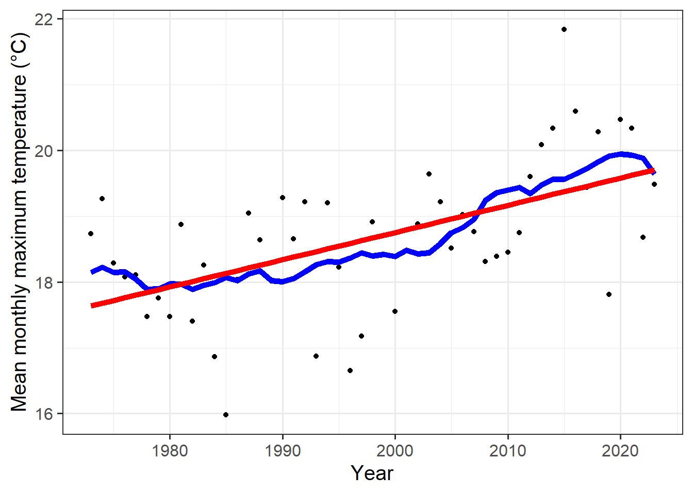
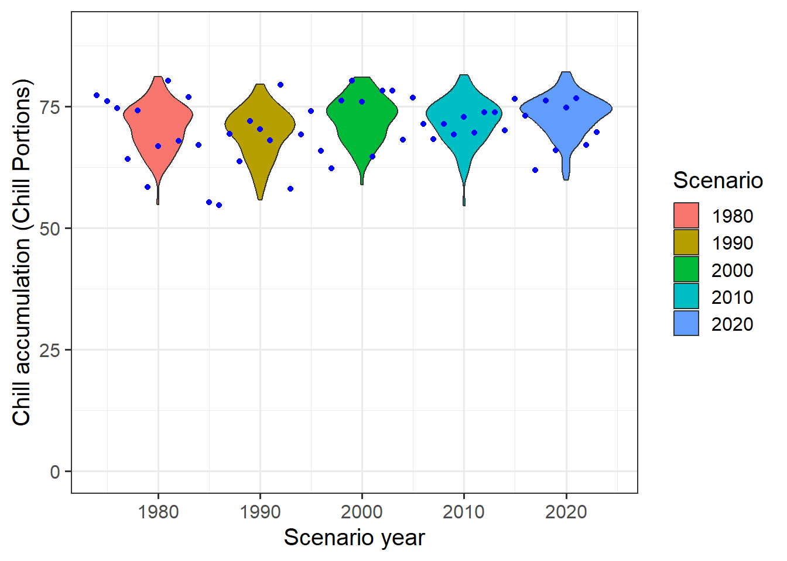

Chapter 14 Historic temperature scenarios
14.1 Learning goals for this lesson
- Understand how we can include temperature scenarios while generating synthetic weather
- Be able to produce temperature scenarios with arbitrary change scenarios imposed
- Understand the difference between absolute and relative temperature scenarios and the importance of baselines (for relative scenarios)
- Learn how to produce temperature scenarios that represent past points in time from historic temperature records
- Learn how to produce synthetic temperature scenarios for past points in time and efficiently compute agroclimatic metrics for them
14.2 Climate change scenarios
A weather generator accessed through chillR can produce agroclimatic profiles for specific locations. Calibration with historical temperature data makes the generated profile representative of the climate during the calibration period. This weather generator can also simulate various climate scenarios using the temperature_scenario parameter in the temperature_generation function.
The temperature_scenario parameter requires a data.frame with columns Tmin and Tmax, each containing 12 values that specify monthly adjustments to the mean minimum and maximum temperatures. Without this parameter, the function defaults to a data.frame with zero adjustments, indicating no change.
A simple climate change scenario can be created by adding arbitrary values to each month’s Tmin and Tmax:
# Here's the call from the earlier lesson. We don't have to run this again.
Temp <- temperature_generation(KA_weather,
years = c(1998,2005),
sim_years = c(2001,2100))
# Now we make a temperature scenario that raises all temperatures by 2°C| Tmin | Tmax |
|---|---|
| 2 | 2 |
| 2 | 2 |
| 2 | 2 |
| 2 | 2 |
| 2 | 2 |
| 2 | 2 |
| 2 | 2 |
| 2 | 2 |
| 2 | 2 |
| 2 | 2 |
| 2 | 2 |
| 2 | 2 |
Temp_2 <- temperature_generation(KA_weather,
years = c(1998,2005),
sim_years = c(2001,2100),
temperature_scenario = change_scenario)
Temperature_scenarios <- KA_weather %>%
filter(Year %in% 1998:2005) %>%
cbind(Data_source = "observed") %>%
rbind(Temp[[1]] %>%
select(c(Year, Month, Day, Tmin, Tmax)) %>%
cbind(Data_source = "simulated")
) %>%
rbind(Temp_2[[1]] %>%
select(c(Year, Month, Day, Tmin, Tmax)) %>%
cbind(Data_source = "Warming_2C")
) %>%
mutate(Date = as.Date(ISOdate(2000,
Month,
Day)))Due to the identical structure of this dataset to the one used in the previous lesson, the same code can be applied with only the data.frame name needing adjustment:
ggplot(data = Temperature_scenarios,
aes(Date,Tmin)) +
geom_smooth(aes(colour = factor(Year))) +
facet_wrap(vars(Data_source)) +
theme_bw(base_size = 20) +
theme(legend.position = "none") +
scale_x_date(date_labels = "%b")
ggplot(data = Temperature_scenarios,
aes(Date,Tmax)) +
geom_smooth(aes(colour = factor(Year))) +
facet_wrap(vars(Data_source)) +
theme_bw(base_size = 20) +
theme(legend.position = "none") +
scale_x_date(date_labels = "%b")
The scenario is simplified, with future changes uniformly distributed across all months—an approach that doesn’t reflect historical patterns and is unlikely for the future. However, this method closely resembles an early attempt at modeling climate change scenarios, as illustrated in the figure from the initial publication on chilling.
![Chill scenarios for a mountain oasis in Oman according (Luedeling et al., 2009b)(images/Luedeling_JPG_Figure_10_Future_chilling (1).jpg)
To create more realistic scenarios, specific years from historical records are used, considering both the expected typical temperature conditions of the time and actual recorded data. This approach clarifies historical climate trends by focusing on gradual climate shifts, avoiding distortions from random annual variations or extreme outliers that might obscure trend analysis.
14.3 Making historic temperature scenarios
A long-term dataset is essential for this exercise, and the process of obtaining and preparing this data for use in chillR has already been covered.
# download weather station list for the vicinity of Bonn
station_list <- handle_gsod(action = "list_stations",
location=c(7.1,50.8))
# download weather data for Cologne/Bonn airport and convert it to chillR format
Bonn_weather <- handle_gsod(action = "download_weather",
location = station_list$chillR_code[1],
time_interval = c(1973,2019)) %>%
handle_gsod()
# check record for missing data
fix_weather(Bonn_weather$`KOLN BONN`)$QC
# (incidentally almost all gaps are for years covered by the KA_weather dataset)
Bonn_patched <- patch_daily_temperatures(
weather = Bonn_weather$`KOLN BONN`,
patch_weather = list(KA_weather))
fix_weather(Bonn_patched)$QC
# There are still 4 days missing here, out of 47 years -
# let's simply interpolate these gaps now
Bonn <- fix_weather(Bonn_patched)
Bonn_temps <- Bonn$weatherTo create weather scenarios representing specific years like 1980, 1990, 2000, and 2010, despite using data centered around the median year of 1996 (due to gradual temperature increases from 1973 to 2019), adjustments must be made to account for historical changes. The process involves analyzing the historical temperature record to quantify shifts between the baseline year (the reference year of the dataset) and each target simulation year.
The chillR package provides a function, temperature_scenario_from_records, designed for this purpose. This function allows for the creation of temperature scenarios based on past records, facilitating the generation of simulations that accurately reflect historical conditions for specified years:
This scenario involves several components:
data: A data frame containing the minimum (Tmin) and maximum (Tmax) temperatures that are representative of the year of interest.scenario_year: The specific year for which the scenario is being created.reference_year: This would be used if the scenario involved temperature changes relative to another year, but in this case, it is set to NA since we are working with absolute temperatures.scenario_type: Indicates whether the scenario presents absolute temperatures for the year of interest (true in this case) or changes relative to another year.labels: Additional information attached to the scenario, such as “running mean scenario,” which provides further context or explanation about the nature of the scenario.
| Tmin | Tmax |
|---|---|
| -1.6792086 | 4.374077 |
| -2.3167936 | 5.580554 |
| 0.8537656 | 9.763557 |
| 2.8043289 | 13.474438 |
| 6.8980925 | 18.016243 |
| 10.4950644 | 21.370489 |
| 12.3964194 | 23.175626 |
| 11.8548366 | 23.186135 |
| 9.2693867 | 19.827527 |
| 5.8487484 | 14.443617 |
| 2.2375311 | 9.076796 |
| 0.1126710 | 6.024129 |
The warning message received when first running the weather generator highlighted a few important points:
scenario doesn’t contain named elements - consider using the following element names: ‘data’, ‘reference_year’,‘scenario_type’,‘labels’
setting scenario_type to ‘relative’
Reference year missing - can’t check if relative temperature scenario is valid
The warning message previously encountered highlighted the missing elements in the input data frame. Scenarios require more information, and when this is absent, the temperature generation function makes assumptions about how to proceed. Specifically, the scenario_type was automatically set to ‘relative’, as the function had to determine whether the scenario represented absolute or relative temperatures. Additionally, the absence of a reference_year meant the function couldn’t identify the baseline for the relative temperature scenario.
With the updated scenario, which now includes all necessary information - such as data, scenario_year, reference_year, scenario_type, and labels - these warnings should no longer occur. The temperature generation function can now be run correctly with this complete set of details:
temps_1980 <- temperature_generation(weather = Bonn_temps,
years = c(1973,2019),
sim_years = c(2001,2100),
temperature_scenario = scenario_1980)Despite providing all the necessary information in the updated scenario, a warning message was still encountered:
“Absolute temperature scenario specified - calibration weather record only used for simulating temperature variation, but not for the means”
The weather generator evaluated the calibration dataset by considering the variation of temperatures around the mean values. It then produced a new dataset with mean temperatures (for both Tmin and Tmax) for each month that correspond to the absolute temperature scenario provided. The variation in this generated dataset was similar to the observed temperature variation, which was the intended outcome.
To convert this absolute temperature scenario into a relative one, a baseline scenario needs to be specified for comparison. In this case, 1996 is chosen as the baseline year, since it represents the median year of the observed record. A scenario for that year can now be created as the reference for comparison:
The 1996 scenario is an absolute temperature scenario. To convert it to a relative change scenario, the temperature_scenario_baseline_adjustment function is used, which adjusts the temperatures based on the baseline scenario.
relative_scenario <- temperature_scenario_baseline_adjustment(
baseline = scenario_1996,
temperature_scenario = scenario_1980)Now, a relative change scenario has been created, which contains the following elements:
data: A data frame with Tmin and Tmax columns, representing the relative changes in temperatures between 1996 and 1980 (all negative values, as 1980 was cooler than 1996).scenario_year: 1980reference_year: 1996scenario_type: ‘relative’labels: ‘running mean scenario’
The relative change scenario can now be applied similarly to previous scenarios:
temps_1980<-temperature_generation(weather = Bonn_temps,
years = c(1973,2019),
sim_years = c(2001,2100),
temperature_scenario = relative_scenario)This time, no warning message appeared because all the necessary information was provided to the temperature_generation function. Now, all the intended scenarios can be created easily, as most functions support vectors and lists, not just single values or data frames.
all_past_scenarios <- temperature_scenario_from_records(
weather = Bonn_temps,
year = c(1980,
1990,
2000,
2010))
adjusted_scenarios <- temperature_scenario_baseline_adjustment(
baseline = scenario_1996,
temperature_scenario = all_past_scenarios)
all_past_scenario_temps <- temperature_generation(
weather = Bonn_temps,
years = c(1973,2019),
sim_years = c(2001,2100),
temperature_scenario = adjusted_scenarios)
save_temperature_scenarios(all_past_scenario_temps, "data", "Bonn_hist_scenarios")To calculate chill accumulation, instead of manually applying each function to the four generated temperature scenarios, the tempResponse_daily_list function from chillR can be used, as it automates the process. Additionally, a simple frost model will be created, with the Dynamic Model and GDH Model selected for evaluation.
frost_model <- function(x)
step_model(x,
data.frame(
lower=c(-1000,0),
upper=c(0,1000),
weight=c(1,0)))
models <- list(Chill_Portions = Dynamic_Model,
GDH = GDH,
Frost_H = frost_model)chill_hist_scenario_list <- tempResponse_daily_list(all_past_scenario_temps,
latitude = 50.9,
Start_JDay = 305,
End_JDay = 59,
models = models)To ensure the scenarios are available for later use in the lessons on Making CMPI6 scenarios and Making CMIP5 scenarios with the ClimateWizard, they should be saved with a clear file name that includes the place name and the start and end dates of the considered period. Before saving, any incomplete winters will be removed from the record to ensure the data is accurate and complete.
chill_hist_scenario_list <- lapply(chill_hist_scenario_list,
function(x) x %>%
filter(Perc_complete == 100))
save_temperature_scenarios(chill_hist_scenario_list, "data","Bonn_hist_chill_305_59")scenarios <- names(chill_hist_scenario_list)[1:4]
all_scenarios <- chill_hist_scenario_list[[scenarios[1]]] %>%
mutate(scenario = as.numeric(scenarios[1]))
for (sc in scenarios[2:4])
all_scenarios <- all_scenarios %>%
rbind(chill_hist_scenario_list[[sc]] %>%
cbind(
scenario=as.numeric(sc))
) %>%
filter(Perc_complete == 100)
# Let's compute the actual 'observed' chill for comparison
actual_chill <- tempResponse_daily_list(Bonn_temps,
latitude=50.9,
Start_JDay = 305,
End_JDay = 59,
models)[[1]] %>%
filter(Perc_complete == 100)
ggplot(data = all_scenarios,
aes(scenario,
Chill_Portions,
fill = factor(scenario))) +
geom_violin() +
ylab("Chill accumulation (Chill Portions)") +
xlab("Scenario year") +
theme_bw(base_size = 15) +
ylim(c(0,90)) +
geom_point(data = actual_chill,
aes(End_year,
Chill_Portions,
fill = "blue"),
col = "blue",
show.legend = FALSE) +
scale_fill_discrete(name = "Scenario",
breaks = unique(all_scenarios$scenario)) 
The observed chill data should also be saved for later use in the lessons on Making CMPI6 scenarios and Making CMIP5 scenarios with the ClimateWizard. This will allow for easy access and comparison when working with those scenarios in the future.
The chill distribution scenarios for 1980, 1990, 2000, and 2010 show minimal change, suggesting that chill deficiencies in Bonn are unlikely in the near future.
So far, all annual scenarios were based on running means of Tmin and Tmax, which is a reasonable approach given the challenges of estimating temperatures in times of accelerating climate change. However, chillR also offers the option of using linear regression to determine representative temperatures for a specific historical scenario. A quick comparison will reveal how this method affects the scenarios.
temperature_means <-
data.frame(Year = min(Bonn_temps$Year):max(Bonn_temps$Year),
Tmin = aggregate(Bonn_temps$Tmin,
FUN = "mean",
by = list(Bonn_temps$Year))[,2],
Tmax=aggregate(Bonn_temps$Tmax,
FUN = "mean",
by = list(Bonn_temps$Year))[,2]) %>%
mutate(runn_mean_Tmin = runn_mean(Tmin,15),
runn_mean_Tmax = runn_mean(Tmax,15))
Tmin_regression <- lm(Tmin~Year,
temperature_means)
Tmax_regression <- lm(Tmax~Year,
temperature_means)
temperature_means <- temperature_means %>%
mutate(regression_Tmin = Tmin_regression$coefficients[1]+
Tmin_regression$coefficients[2]*temperature_means$Year,
regression_Tmax = Tmax_regression$coefficients[1]+
Tmax_regression$coefficients[2]*temperature_means$Year
)
ggplot(temperature_means,
aes(Year,
Tmin)) +
geom_point() +
geom_line(data = temperature_means,
aes(Year,
runn_mean_Tmin),
lwd = 2,
col = "blue") +
geom_line(data = temperature_means,
aes(Year,
regression_Tmin),
lwd = 2,
col = "red") +
theme_bw(base_size = 15) +
ylab("Mean monthly minimum temperature (°C)")
ggplot(temperature_means,
aes(Year,
Tmax)) +
geom_point() +
geom_line(data = temperature_means,
aes(Year,
runn_mean_Tmax),
lwd = 2,
col = "blue") +
geom_line(data = temperature_means,
aes(Year,
regression_Tmax),
lwd = 2,
col = "red") +
theme_bw(base_size = 15) +
ylab("Mean monthly maximum temperature (°C)")
There is a noticeable difference between the running mean function (blue) and the linear regression line (red). While the running mean provides a smoother approximation, the linear regression line offers a more direct trend. This difference can be significant, and it is expected to become more pronounced as climate change continues to affect temperature patterns.
14.4 Exercises on generating historic temperature scenarios
Please document all results of the following assignments in your learning logbook.
- For the location you chose for previous exercises, produce historic temperature scenarios representing several years of the historic record (your choice).
## YEARMODA DATE Date Year Month Day Tmin Tmax Tmean
## 1 19730101 1973-01-01 12:00:00 1973-01-01 12:00:00 1973 1 1 -3.000 6.111 0.000
## 2 19730102 1973-01-02 12:00:00 1973-01-02 12:00:00 1973 1 2 -1.111 8.278 2.611
## 3 19730103 1973-01-03 12:00:00 1973-01-03 12:00:00 1973 1 3 -5.000 3.000 -1.278
## 4 19730104 1973-01-04 12:00:00 1973-01-04 12:00:00 1973 1 4 -12.222 -0.611 -6.389
## 5 19730105 1973-01-05 12:00:00 1973-01-05 12:00:00 1973 1 5 -10.000 -3.278 -6.667
## 6 19730106 1973-01-06 12:00:00 1973-01-06 12:00:00 1973 1 6 -17.222 -5.000 -9.944
## 7 19730107 1973-01-07 12:00:00 1973-01-07 12:00:00 1973 1 7 -17.000 -6.000 -12.333
## 8 19730108 1973-01-08 12:00:00 1973-01-08 12:00:00 1973 1 8 -17.000 -5.000 -11.167
## 9 19730109 1973-01-09 12:00:00 1973-01-09 12:00:00 1973 1 9 -13.889 -4.000 -7.389
## 10 19730110 1973-01-10 12:00:00 1973-01-10 12:00:00 1973 1 10 -9.000 -2.778 -5.056
## 11 19730111 1973-01-11 12:00:00 1973-01-11 12:00:00 1973 1 11 -6.111 -2.722 -4.556
## 12 19730112 1973-01-12 12:00:00 1973-01-12 12:00:00 1973 1 12 -8.278 -1.611 -4.000
## 13 19730113 1973-01-13 12:00:00 1973-01-13 12:00:00 1973 1 13 -1.111 2.222 0.667
## 14 19730114 1973-01-14 12:00:00 1973-01-14 12:00:00 1973 1 14 -2.222 1.111 -0.222
## 15 19730115 1973-01-15 12:00:00 1973-01-15 12:00:00 1973 1 15 -3.278 3.778 -0.444
## 16 19730116 1973-01-16 12:00:00 1973-01-16 12:00:00 1973 1 16 1.111 5.000 2.889
## 17 19730117 1973-01-17 12:00:00 1973-01-17 12:00:00 1973 1 17 -2.778 6.611 1.333
## 18 19730118 1973-01-18 12:00:00 1973-01-18 12:00:00 1973 1 18 -1.722 6.111 0.778
## 19 19730119 1973-01-19 12:00:00 1973-01-19 12:00:00 1973 1 19 -3.889 4.389 1.056
## 20 19730120 1973-01-20 12:00:00 1973-01-20 12:00:00 1973 1 20 -6.611 4.389 -2.278
## 21 19730121 1973-01-21 12:00:00 1973-01-21 12:00:00 1973 1 21 -7.222 4.389 -3.111
## 22 19730122 1973-01-22 12:00:00 1973-01-22 12:00:00 1973 1 22 -7.722 3.278 -4.167
## 23 19730123 1973-01-23 12:00:00 1973-01-23 12:00:00 1973 1 23 -5.000 2.222 -1.889
## 24 19730124 1973-01-24 12:00:00 1973-01-24 12:00:00 1973 1 24 -5.500 6.111 -1.111
## 25 19730125 1973-01-25 12:00:00 1973-01-25 12:00:00 1973 1 25 -0.611 7.778 3.333
## 26 19730126 1973-01-26 12:00:00 1973-01-26 12:00:00 1973 1 26 -7.722 3.778 -2.444
## 27 19730127 1973-01-27 12:00:00 1973-01-27 12:00:00 1973 1 27 -5.000 2.778 -2.222
## 28 19730128 1973-01-28 12:00:00 1973-01-28 12:00:00 1973 1 28 -3.889 2.222 -0.611
## 29 19730129 1973-01-29 12:00:00 1973-01-29 12:00:00 1973 1 29 -4.389 2.778 -1.556
## 30 19730130 1973-01-30 12:00:00 1973-01-30 12:00:00 1973 1 30 -5.611 1.722 -1.778
## 31 19730131 1973-01-31 12:00:00 1973-01-31 12:00:00 1973 1 31 -6.222 2.222 -1.500
## 32 19730201 1973-02-01 12:00:00 1973-02-01 12:00:00 1973 2 1 -5.611 3.278 -1.944
## 33 19730202 1973-02-02 12:00:00 1973-02-02 12:00:00 1973 2 2 -2.722 6.111 0.778
## 34 19730203 1973-02-03 12:00:00 1973-02-03 12:00:00 1973 2 3 -0.500 8.278 2.444
## 35 19730204 1973-02-04 12:00:00 1973-02-04 12:00:00 1973 2 4 -1.111 7.778 3.111
## 36 19730205 1973-02-05 12:00:00 1973-02-05 12:00:00 1973 2 5 -5.000 7.222 0.000
## 37 19730206 1973-02-06 12:00:00 1973-02-06 12:00:00 1973 2 6 0.500 6.722 1.778
## 38 19730207 1973-02-07 12:00:00 1973-02-07 12:00:00 1973 2 7 0.000 5.500 1.722
## 39 19730208 1973-02-08 12:00:00 1973-02-08 12:00:00 1973 2 8 -5.611 6.111 -0.611
## 40 19730209 1973-02-09 12:00:00 1973-02-09 12:00:00 1973 2 9 -3.278 5.000 0.444
## 41 19730210 1973-02-10 12:00:00 1973-02-10 12:00:00 1973 2 10 -0.611 2.778 0.944
## 42 19730211 1973-02-11 12:00:00 1973-02-11 12:00:00 1973 2 11 -2.722 1.722 0.056
## 43 19730212 1973-02-12 12:00:00 1973-02-12 12:00:00 1973 2 12 -1.111 1.111 -0.056
## 44 19730213 1973-02-13 12:00:00 1973-02-13 12:00:00 1973 2 13 0.000 3.278 0.833
## 45 19730214 1973-02-14 12:00:00 1973-02-14 12:00:00 1973 2 14 0.500 4.389 1.611
## 46 19730215 1973-02-15 12:00:00 1973-02-15 12:00:00 1973 2 15 1.111 3.278 1.889
## 47 19730216 1973-02-16 12:00:00 1973-02-16 12:00:00 1973 2 16 -0.500 3.278 1.278
## 48 19730217 1973-02-17 12:00:00 1973-02-17 12:00:00 1973 2 17 1.111 6.111 2.167
## 49 19730218 1973-02-18 12:00:00 1973-02-18 12:00:00 1973 2 18 -2.778 11.611 3.444
## 50 19730219 1973-02-19 12:00:00 1973-02-19 12:00:00 1973 2 19 -2.778 10.611 2.278
## 51 19730220 1973-02-20 12:00:00 1973-02-20 12:00:00 1973 2 20 -3.278 12.722 2.944
## 52 19730221 1973-02-21 12:00:00 1973-02-21 12:00:00 1973 2 21 -3.278 13.278 3.556
## 53 19730222 1973-02-22 12:00:00 1973-02-22 12:00:00 1973 2 22 -3.278 12.722 3.278
## 54 19730223 1973-02-23 12:00:00 1973-02-23 12:00:00 1973 2 23 -2.222 13.778 4.389
## 55 19730224 1973-02-24 12:00:00 1973-02-24 12:00:00 1973 2 24 -2.778 13.778 4.667
## 56 19730225 1973-02-25 12:00:00 1973-02-25 12:00:00 1973 2 25 1.111 14.389 7.167
## 57 19730226 1973-02-26 12:00:00 1973-02-26 12:00:00 1973 2 26 2.722 13.278 7.389
## 58 19730227 1973-02-27 12:00:00 1973-02-27 12:00:00 1973 2 27 0.000 14.389 6.333
## 59 19730228 1973-02-28 12:00:00 1973-02-28 12:00:00 1973 2 28 3.278 15.000 7.500
## 60 19730301 1973-03-01 12:00:00 1973-03-01 12:00:00 1973 3 1 6.111 13.278 9.722
## 61 19730302 1973-03-02 12:00:00 1973-03-02 12:00:00 1973 3 2 -1.611 13.278 6.111
## 62 19730303 1973-03-03 12:00:00 1973-03-03 12:00:00 1973 3 3 -0.611 12.778 4.611
## 63 19730304 1973-03-04 12:00:00 1973-03-04 12:00:00 1973 3 4 -2.778 14.389 6.056
## 64 19730305 1973-03-05 12:00:00 1973-03-05 12:00:00 1973 3 5 -2.722 13.778 5.222
## 65 19730306 1973-03-06 12:00:00 1973-03-06 12:00:00 1973 3 6 -1.111 15.000 6.500
## 66 19730307 1973-03-07 12:00:00 1973-03-07 12:00:00 1973 3 7 4.389 16.111 9.611
## 67 19730308 1973-03-08 12:00:00 1973-03-08 12:00:00 1973 3 8 3.278 16.111 9.278
## 68 19730309 1973-03-09 12:00:00 1973-03-09 12:00:00 1973 3 9 2.722 15.611 10.000
## 69 19730310 1973-03-10 12:00:00 1973-03-10 12:00:00 1973 3 10 7.222 14.389 10.556
## 70 19730311 1973-03-11 12:00:00 1973-03-11 12:00:00 1973 3 11 -3.889 15.500 4.500
## 71 19730312 1973-03-12 12:00:00 1973-03-12 12:00:00 1973 3 12 -2.722 14.389 4.889
## 72 19730313 1973-03-13 12:00:00 1973-03-13 12:00:00 1973 3 13 -1.111 13.889 5.167
## 73 19730314 1973-03-14 12:00:00 1973-03-14 12:00:00 1973 3 14 -5.000 14.389 3.556
## 74 19730315 1973-03-15 12:00:00 1973-03-15 12:00:00 1973 3 15 -0.500 14.389 6.833
## 75 19730316 1973-03-16 12:00:00 1973-03-16 12:00:00 1973 3 16 2.222 17.778 8.667
## 76 19730317 1973-03-17 12:00:00 1973-03-17 12:00:00 1973 3 17 -3.778 12.222 4.944
## 77 19730318 1973-03-18 12:00:00 1973-03-18 12:00:00 1973 3 18 1.611 13.778 5.611
## 78 19730319 1973-03-19 12:00:00 1973-03-19 12:00:00 1973 3 19 5.611 12.222 8.111
## 79 19730320 1973-03-20 12:00:00 1973-03-20 12:00:00 1973 3 20 3.778 15.000 8.500
## 80 19730321 1973-03-21 12:00:00 1973-03-21 12:00:00 1973 3 21 -1.611 15.000 7.056
## 81 19730322 1973-03-22 12:00:00 1973-03-22 12:00:00 1973 3 22 2.722 15.000 9.611
## 82 19730323 1973-03-23 12:00:00 1973-03-23 12:00:00 1973 3 23 -2.722 18.278 7.778
## 83 19730324 1973-03-24 12:00:00 1973-03-24 12:00:00 1973 3 24 -2.778 18.278 7.333
## Prec Tmin_source Tmax_source
## 1 0.000 <NA> <NA>
## 2 0.000 <NA> <NA>
## 3 0.000 <NA> <NA>
## 4 0.000 <NA> <NA>
## 5 1.016 <NA> <NA>
## 6 0.000 <NA> <NA>
## 7 0.000 <NA> <NA>
## 8 0.000 <NA> <NA>
## 9 44.958 <NA> <NA>
## 10 50.038 <NA> <NA>
## 11 4.064 <NA> <NA>
## 12 7.112 <NA> <NA>
## 13 6.096 <NA> <NA>
## 14 0.000 <NA> <NA>
## 15 136.906 <NA> <NA>
## 16 1.016 <NA> <NA>
## 17 1.016 <NA> <NA>
## 18 0.000 <NA> <NA>
## 19 7.874 <NA> <NA>
## 20 0.000 <NA> <NA>
## 21 35.052 <NA> <NA>
## 22 0.000 <NA> <NA>
## 23 0.000 <NA> <NA>
## 24 NA <NA> <NA>
## 25 41.910 <NA> <NA>
## 26 42.926 <NA> <NA>
## 27 0.000 <NA> <NA>
## 28 37.084 <NA> <NA>
## 29 0.000 <NA> <NA>
## 30 0.000 <NA> <NA>
## 31 0.000 <NA> <NA>
## 32 0.000 <NA> <NA>
## 33 39.116 <NA> <NA>
## 34 0.000 <NA> <NA>
## 35 39.878 <NA> <NA>
## 36 46.990 <NA> <NA>
## 37 0.000 <NA> <NA>
## 38 0.000 <NA> <NA>
## 39 41.910 <NA> <NA>
## 40 77.978 <NA> <NA>
## 41 34.036 <NA> <NA>
## 42 1.016 <NA> <NA>
## 43 35.052 <NA> <NA>
## 44 1.016 <NA> <NA>
## 45 0.000 <NA> <NA>
## 46 0.000 <NA> <NA>
## 47 0.000 <NA> <NA>
## 48 0.000 <NA> <NA>
## 49 43.942 <NA> <NA>
## 50 0.000 <NA> <NA>
## 51 102.108 <NA> <NA>
## 52 44.958 <NA> <NA>
## 53 0.000 <NA> <NA>
## 54 59.944 <NA> <NA>
## 55 0.000 <NA> <NA>
## 56 0.000 <NA> <NA>
## 57 0.000 <NA> <NA>
## 58 119.888 <NA> <NA>
## 59 0.000 <NA> <NA>
## 60 0.000 <NA> <NA>
## 61 0.000 <NA> <NA>
## 62 0.000 <NA> <NA>
## 63 0.000 <NA> <NA>
## 64 0.000 <NA> <NA>
## 65 0.000 <NA> <NA>
## 66 54.102 <NA> <NA>
## 67 130.048 <NA> <NA>
## 68 0.000 <NA> <NA>
## 69 0.000 <NA> <NA>
## 70 89.916 <NA> <NA>
## 71 144.018 <NA> <NA>
## 72 109.982 <NA> <NA>
## 73 0.000 <NA> <NA>
## 74 0.000 <NA> <NA>
## 75 109.982 <NA> <NA>
## 76 0.000 <NA> <NA>
## 77 0.000 <NA> <NA>
## 78 49.022 <NA> <NA>
## 79 0.000 <NA> <NA>
## 80 0.000 <NA> <NA>
## 81 0.000 <NA> <NA>
## 82 0.000 <NA> <NA>
## 83 54.102 <NA> <NA>
## [ reached 'max' / getOption("max.print") -- omitted 18544 rows ]#get a list of close-by weather stations
station_list <- handle_gsod(action = "list_stations",
location = c(long = -120.5, lat = 46.6),
time_interval = c(1973, 2023))
#download data
Yakima_weather <- handle_gsod(action = "download_weather",
location = station_list$chillR_code[1],
time_interval = c(1973, 2023)) %>%
handle_gsod()## Loading data for 51 years from station 'YAKIMA AIR TERMINAL/MCALSR FIELD AP'
## ===============================================================================================# check record for missing data
fix_weather(Yakima_weather$`YAKIMA AIR TERMINAL/MCALSR FIELD AP`)$QC## Season End_year Season_days Data_days Missing_Tmin Missing_Tmax Incomplete_days
## 1 1972/1973 1973 365 365 0 0 0
## 2 1973/1974 1974 365 365 0 0 0
## 3 1974/1975 1975 365 365 0 0 0
## 4 1975/1976 1976 366 366 0 0 0
## 5 1976/1977 1977 365 365 0 0 0
## 6 1977/1978 1978 365 365 0 0 0
## 7 1978/1979 1979 365 365 0 0 0
## 8 1979/1980 1980 366 366 0 0 0
## 9 1980/1981 1981 365 365 0 0 0
## 10 1981/1982 1982 365 365 0 0 0
## 11 1982/1983 1983 365 365 0 0 0
## 12 1983/1984 1984 366 366 0 0 0
## 13 1984/1985 1985 365 365 0 0 0
## 14 1985/1986 1986 365 365 0 0 0
## 15 1986/1987 1987 365 365 0 0 0
## 16 1987/1988 1988 366 366 0 0 0
## 17 1988/1989 1989 365 365 0 0 0
## 18 1989/1990 1990 365 365 0 0 0
## 19 1990/1991 1991 365 365 0 0 0
## 20 1991/1992 1992 366 366 0 0 0
## 21 1992/1993 1993 365 365 0 0 0
## 22 1993/1994 1994 365 365 0 0 0
## 23 1994/1995 1995 365 365 0 0 0
## 24 1995/1996 1996 366 366 0 0 0
## 25 1996/1997 1997 365 365 0 0 0
## 26 1997/1998 1998 365 365 0 0 0
## 27 1998/1999 1999 365 365 0 0 0
## 28 1999/2000 2000 366 366 0 0 0
## 29 2000/2001 2001 365 365 0 0 0
## 30 2001/2002 2002 365 365 0 0 0
## 31 2002/2003 2003 365 365 0 0 0
## 32 2003/2004 2004 366 366 0 0 0
## 33 2004/2005 2005 365 365 0 0 0
## 34 2005/2006 2006 365 365 0 0 0
## 35 2006/2007 2007 365 365 0 0 0
## 36 2007/2008 2008 366 366 0 0 0
## 37 2008/2009 2009 365 365 0 0 0
## 38 2009/2010 2010 365 365 0 0 0
## 39 2010/2011 2011 365 365 0 0 0
## 40 2011/2012 2012 366 366 0 0 0
## 41 2012/2013 2013 365 365 0 0 0
## 42 2013/2014 2014 365 365 0 0 0
## 43 2014/2015 2015 365 365 0 0 0
## 44 2015/2016 2016 366 366 0 0 0
## 45 2016/2017 2017 365 365 0 0 0
## 46 2017/2018 2018 365 365 0 0 0
## 47 2018/2019 2019 365 365 0 0 0
## 48 2019/2020 2020 366 366 0 0 0
## 49 2020/2021 2021 365 365 0 0 0
## 50 2021/2022 2022 365 365 0 0 0
## 51 2022/2023 2023 365 365 0 0 0
## Perc_complete
## 1 100
## 2 100
## 3 100
## 4 100
## 5 100
## 6 100
## 7 100
## 8 100
## 9 100
## 10 100
## 11 100
## 12 100
## 13 100
## 14 100
## 15 100
## 16 100
## 17 100
## 18 100
## 19 100
## 20 100
## 21 100
## 22 100
## 23 100
## 24 100
## 25 100
## 26 100
## 27 100
## 28 100
## 29 100
## 30 100
## 31 100
## 32 100
## 33 100
## 34 100
## 35 100
## 36 100
## 37 100
## 38 100
## 39 100
## 40 100
## 41 100
## 42 100
## 43 100
## 44 100
## 45 100
## 46 100
## 47 100
## 48 100
## 49 100
## 50 100
## 51 100# filling gaps
patch_weather <-
handle_gsod(action = "download_weather",
location = as.character(station_list$chillR_code[c(4, 6)]),
time_interval = c(1973, 2023)) %>%
handle_gsod()## Loading data for 51 years from station 'RANGE OP 13 / YAKIMA TRAINING CENTER'
## ===============================================================================================
##
## Loading data for 51 years from station 'BOWERS FIELD AIRPORT'
## ===============================================================================================Yakima_patched <- patch_daily_temperatures(
weather = Yakima_weather$`YAKIMA AIR TERMINAL/MCALSR FIELD AP`,
patch_weather = patch_weather)
fix_weather(Yakima_patched)$QC## Season End_year Season_days Data_days Missing_Tmin Missing_Tmax Incomplete_days
## 1 1972/1973 1973 365 365 0 0 0
## 2 1973/1974 1974 365 365 0 0 0
## 3 1974/1975 1975 365 365 0 0 0
## 4 1975/1976 1976 366 366 0 0 0
## 5 1976/1977 1977 365 365 0 0 0
## 6 1977/1978 1978 365 365 0 0 0
## 7 1978/1979 1979 365 365 0 0 0
## 8 1979/1980 1980 366 366 0 0 0
## 9 1980/1981 1981 365 365 0 0 0
## 10 1981/1982 1982 365 365 0 0 0
## 11 1982/1983 1983 365 365 0 0 0
## 12 1983/1984 1984 366 366 0 0 0
## 13 1984/1985 1985 365 365 0 0 0
## 14 1985/1986 1986 365 365 0 0 0
## 15 1986/1987 1987 365 365 0 0 0
## 16 1987/1988 1988 366 366 0 0 0
## 17 1988/1989 1989 365 365 0 0 0
## 18 1989/1990 1990 365 365 0 0 0
## 19 1990/1991 1991 365 365 0 0 0
## 20 1991/1992 1992 366 366 0 0 0
## 21 1992/1993 1993 365 365 0 0 0
## 22 1993/1994 1994 365 365 0 0 0
## 23 1994/1995 1995 365 365 0 0 0
## 24 1995/1996 1996 366 366 0 0 0
## 25 1996/1997 1997 365 365 0 0 0
## 26 1997/1998 1998 365 365 0 0 0
## 27 1998/1999 1999 365 365 0 0 0
## 28 1999/2000 2000 366 366 0 0 0
## 29 2000/2001 2001 365 365 0 0 0
## 30 2001/2002 2002 365 365 0 0 0
## 31 2002/2003 2003 365 365 0 0 0
## 32 2003/2004 2004 366 366 0 0 0
## 33 2004/2005 2005 365 365 0 0 0
## 34 2005/2006 2006 365 365 0 0 0
## 35 2006/2007 2007 365 365 0 0 0
## 36 2007/2008 2008 366 366 0 0 0
## 37 2008/2009 2009 365 365 0 0 0
## 38 2009/2010 2010 365 365 0 0 0
## 39 2010/2011 2011 365 365 0 0 0
## 40 2011/2012 2012 366 366 0 0 0
## 41 2012/2013 2013 365 365 0 0 0
## 42 2013/2014 2014 365 365 0 0 0
## 43 2014/2015 2015 365 365 0 0 0
## 44 2015/2016 2016 366 366 0 0 0
## 45 2016/2017 2017 365 365 0 0 0
## 46 2017/2018 2018 365 365 0 0 0
## 47 2018/2019 2019 365 365 0 0 0
## 48 2019/2020 2020 366 366 0 0 0
## 49 2020/2021 2021 365 365 0 0 0
## 50 2021/2022 2022 365 365 0 0 0
## 51 2022/2023 2023 365 365 0 0 0
## Perc_complete
## 1 100
## 2 100
## 3 100
## 4 100
## 5 100
## 6 100
## 7 100
## 8 100
## 9 100
## 10 100
## 11 100
## 12 100
## 13 100
## 14 100
## 15 100
## 16 100
## 17 100
## 18 100
## 19 100
## 20 100
## 21 100
## 22 100
## 23 100
## 24 100
## 25 100
## 26 100
## 27 100
## 28 100
## 29 100
## 30 100
## 31 100
## 32 100
## 33 100
## 34 100
## 35 100
## 36 100
## 37 100
## 38 100
## 39 100
## 40 100
## 41 100
## 42 100
## 43 100
## 44 100
## 45 100
## 46 100
## 47 100
## 48 100
## 49 100
## 50 100
## 51 100temperature_means <-
data.frame(Year = min(Yakima_temps$Year):max(Yakima_temps$Year),
Tmin = aggregate(Yakima_temps$Tmin,
FUN = "mean",
by = list(Yakima_temps$Year))[,2],
Tmax=aggregate(Yakima_temps$Tmax,
FUN = "mean",
by = list(Yakima_temps$Year))[,2]) %>%
mutate(runn_mean_Tmin = runn_mean(Tmin,15),
runn_mean_Tmax = runn_mean(Tmax,15))
Tmin_regression <- lm(Tmin~Year,
temperature_means)
Tmax_regression <- lm(Tmax~Year,
temperature_means)
temperature_means <- temperature_means %>%
mutate(regression_Tmin = Tmin_regression$coefficients[1]+
Tmin_regression$coefficients[2]*temperature_means$Year,
regression_Tmax = Tmax_regression$coefficients[1]+
Tmax_regression$coefficients[2]*temperature_means$Year
)# plot mean monthly minimum temperature of 1973 to 2023
ggplot(temperature_means,
aes(Year,
Tmin)) +
geom_point() +
geom_line(data = temperature_means,
aes(Year,
runn_mean_Tmin),
lwd = 2,
col = "blue") +
geom_line(data = temperature_means,
aes(Year,
regression_Tmin),
lwd = 2,
col = "red") +
theme_bw(base_size = 15) +
ylab("Mean monthly minimum temperature (°C)")
# plot mean monthly maximum temperature of 1973 to 2023
ggplot(temperature_means,
aes(Year,
Tmax)) +
geom_point() +
geom_line(data = temperature_means,
aes(Year,
runn_mean_Tmax),
lwd = 2,
col = "blue") +
geom_line(data = temperature_means,
aes(Year,
regression_Tmax),
lwd = 2,
col = "red") +
theme_bw(base_size = 15) +
ylab("Mean monthly maximum temperature (°C)")
- Produce chill distributions for these scenarios and plot them.
scenario_1980 <- temperature_scenario_from_records(weather = Yakima_temps,
year = 1980)
temps_1980 <- temperature_generation(weather = Yakima_temps,
years = c(1973, 2023),
sim_years = c(2001, 2100),
temperature_scenario = scenario_1980)## Warning: Absolute temperature scenario specified - calibration weather record only used for
## simulating temperature variation, but not for the meansscenario_1998 <- temperature_scenario_from_records(weather = Yakima_temps,
year = 1998)
relative_scenario <- temperature_scenario_baseline_adjustment(
baseline = scenario_1998,
temperature_scenario = scenario_1980)
temps_1980 <- temperature_generation(weather = Yakima_temps,
years = c(1973, 2023),
sim_years = c(2001,2100),
temperature_scenario = relative_scenario)
all_past_scenarios <- temperature_scenario_from_records(
weather = Yakima_temps,
year = c(1980,
1990,
2000,
2010,
2020))
adjusted_scenarios <- temperature_scenario_baseline_adjustment(
baseline = scenario_1998,
temperature_scenario = all_past_scenarios)
all_past_scenario_temps <- temperature_generation(
weather = Yakima_temps,
years = c(1973, 2023),
sim_years = c(2001, 2100),
temperature_scenario = adjusted_scenarios)
save_temperature_scenarios(all_past_scenario_temps, "Yakima", "Yakima_hist_scenarios")
frost_model <- function(x)
step_model(x,
data.frame(
lower = c(-1000,0),
upper = c(0,1000),
weight = c(1,0)))
models <- list(Chill_Portions = Dynamic_Model,
GDH = GDH,
Frost_H = frost_model)
chill_hist_scenario_list <- tempResponse_daily_list(all_past_scenario_temps,
latitude = 46.6,
Start_JDay = 305,
End_JDay = 59,
models = models)
chill_hist_scenario_list <- lapply(chill_hist_scenario_list,
function(x) x %>%
filter(Perc_complete == 100))
save_temperature_scenarios(chill_hist_scenario_list, "Yakima","Yakima_hist_chill_305_59")
scenarios <- names(chill_hist_scenario_list)[1:5]
all_scenarios <- chill_hist_scenario_list[[scenarios[1]]] %>%
mutate(scenario = as.numeric(scenarios[1]))
for (sc in scenarios[2:5])
all_scenarios <- all_scenarios %>%
rbind(chill_hist_scenario_list[[sc]] %>%
cbind(
scenario=as.numeric(sc))
) %>%
filter(Perc_complete == 100)
# Let's compute the actual 'observed' chill for comparison
actual_chill <- tempResponse_daily_list(Yakima_temps,
latitude=46.6,
Start_JDay = 305,
End_JDay = 59,
models)[[1]] %>%
filter(Perc_complete == 100)ggplot(data = all_scenarios,
aes(scenario,
Chill_Portions,
fill = factor(scenario))) +
geom_violin() +
ylab("Chill accumulation (Chill Portions)") +
xlab("Scenario year") +
theme_bw(base_size = 15) +
ylim(c(0,90)) +
geom_point(data = actual_chill,
aes(End_year,
Chill_Portions,
fill = "blue"),
col = "blue",
show.legend = FALSE) +
scale_fill_discrete(name = "Scenario",
breaks = unique(all_scenarios$scenario)) 